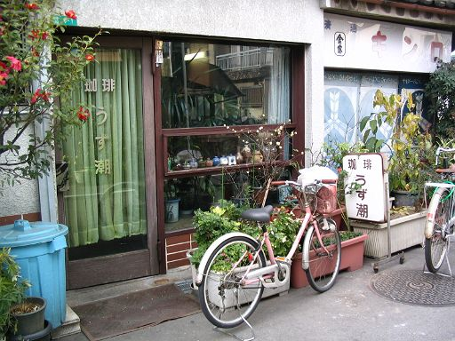
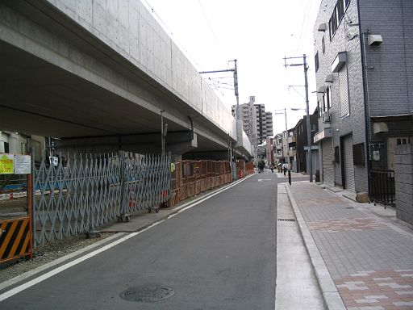
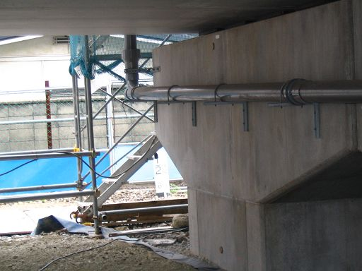
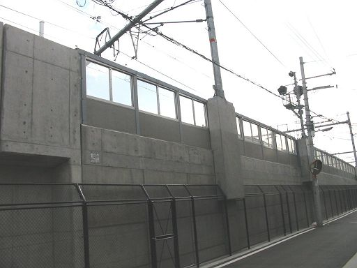
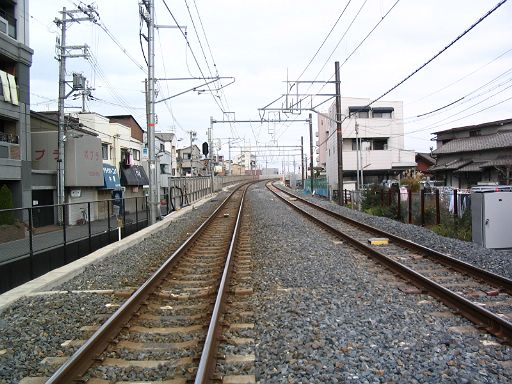
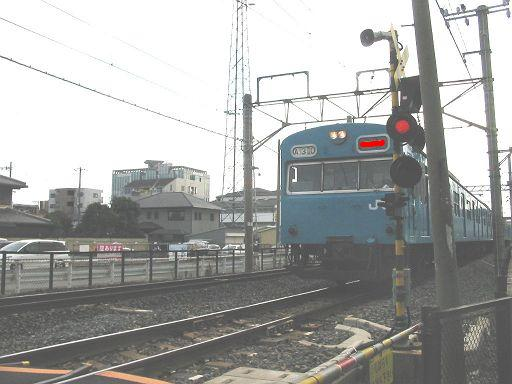
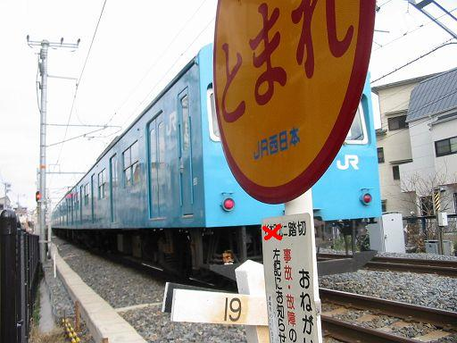
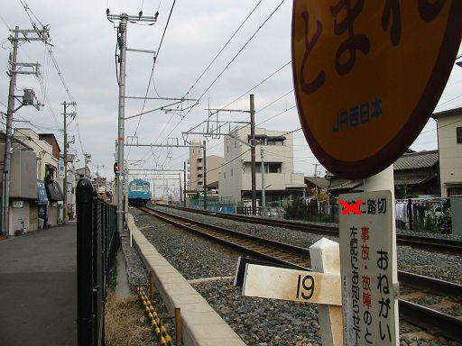
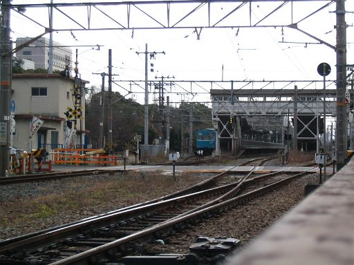

鉄夫、立ち上がるの巻
「オレは103そんな興味ないけどなあ」とつぶやいていた鉄夫。今までの鉄子の決死の撮影を一歩引いて見てました
それがどうしたことでしょう。「同じ撮るなら、●●方面行こうよ」と提案をしてきました。
よしゃそれなら、と二人で天満を自転車でスタート。クリスマスイブの街をどんどん走ります。
かなり走りました。お、味のある喫茶店があったので一服
鉄夫「あの～喫茶店やってはりますぅ」？ 何ちゅう入り方や、鉄夫。

喫茶「うず潮」。おばちゃんの自宅の居間でコーヒー飲んでる感じでした。おばちゃん＋友人、店屋物注文して食べてるし。
寄り道しながら２時間ぐらいで目的地近く到着。

鉄夫が何か一生懸命撮ってます。

鉄夫「6.5。これ重要。」 鉄子にはさっぱりわかりません。
鉄夫何撮ってんだか。よしゃ、ウチはさっそく車両狙いやーパシャ！

あかん～車両の上のでっぱりがちょろっと写っただけで何がなんだかや～

鉄夫「よしゃここで待つか。いや、ここは撮りにくそうやな。」
ウチはかまへん。何でも来たら撮るぞ。ほい来た～パシャ

あかん～暗くてよくわからん。画像加工してこの程度や。
鉄夫「行き先表示幕を隠してますが賢明な皆さんにはこれが何線かは明らかだと思います。」
よしゃ、最後尾ねらいや。気を取り直していくぜーパシャ

あかん～ とまれの看板邪魔～！！もっぺんもっぺん急げ急げパシャ！

あかん～ 逃げられてもた～ カメラ反応遅すぎや～

鉄夫「よしゃ。ホーム遠いけどまあええやろ。103止まってるし。」
さて、鉄夫＆鉄子はどこにいるのでしょう？
旅はまだまだ続きますが、今回はここまで。次回に続く。。。
都島